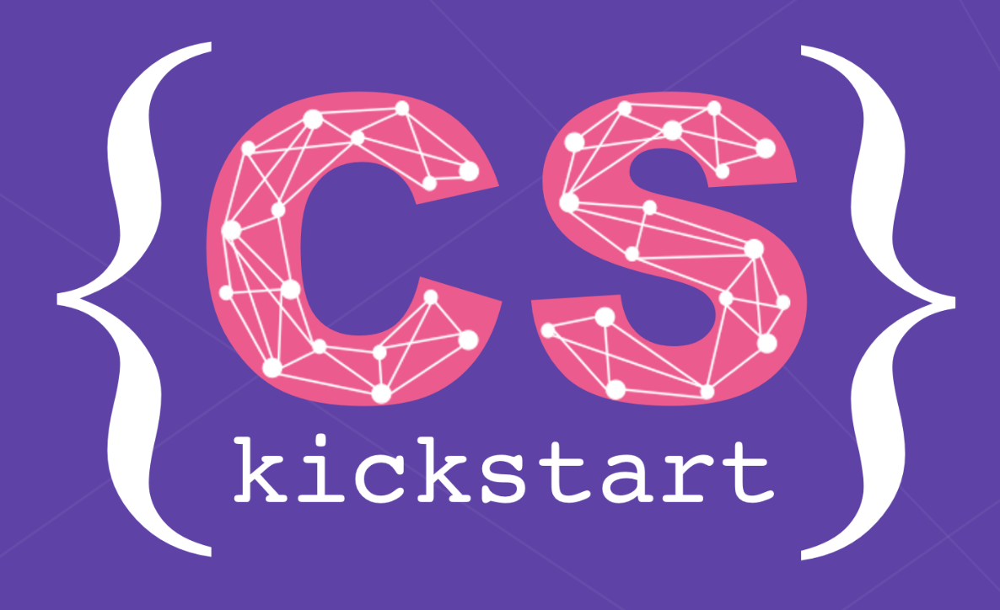
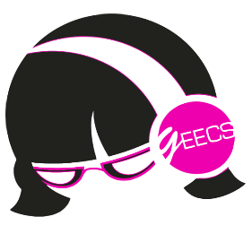
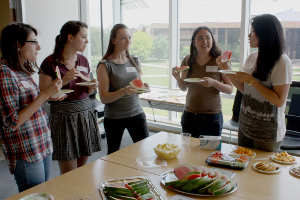

Women in Computing Lecture Series
 This lecture series highlights exceptional female researchers and faculty members from many different areas of computer science. It has featured speakers such as Maja Matarić (left), Mary Lou Soffa, and Rosalind Picard. Usually, these lectures are accompanied by an informal social event, allowing women at the University of Michigan to meet and talk with these accomplished women. Information about upcoming speakers can be found on the CSE website.
This lecture series highlights exceptional female researchers and faculty members from many different areas of computer science. It has featured speakers such as Maja Matarić (left), Mary Lou Soffa, and Rosalind Picard. Usually, these lectures are accompanied by an informal social event, allowing women at the University of Michigan to meet and talk with these accomplished women. Information about upcoming speakers can be found on the CSE website.
Girls Encoded High School Event
 Girls Encoded, which took place on April 9, 2016, was an exciting all-day event designed to educate and encourage high school girls to study computer science. The day was filled with hands-on activities, panel discussions, and U of M CSE lab tours. It provided the perfect opportunity for any girl wanting to learn more about the exciting things computer science has to offer. More information about the event can be found here.
Girls Encoded, which took place on April 9, 2016, was an exciting all-day event designed to educate and encourage high school girls to study computer science. The day was filled with hands-on activities, panel discussions, and U of M CSE lab tours. It provided the perfect opportunity for any girl wanting to learn more about the exciting things computer science has to offer. More information about the event can be found here.
CS Kickstart

CS KickStart is an intensive one-week program at the U of M designed to help incoming freshmen women explore computer science in hopes of recruiting them into the field. The week includes programming labs, faculty speakers, an industry panel, a field trip to a local tech company, and networking opportunities. The program aims to show participants the various possibilities in the field of computer science, help participants gain knowledge and experience which will give them more confidence in their future engineering classes, and help participants build a network of support through mentors and peers. Details are available at the CS Kickstart website.
gEECS

Girls in Electric Engineering and Computer Science, gEECS for short, was founded in 2002. They are a student-run organization at the University of Michigan dedicated to encouraging the professional, academic, and social development of women in technology-related fields of study. In an effort to promote the education and success of technologically inclined women, gEECS reaches out to women ranging from middle school girls to graduate students. More information about their events and how to get involved can be found on their website.
ECSEL

ECSEL, the Ensemble of CSE Ladies, is a group to support graduate women students in CSE at the University of Michigan. They aim to foster a sense of community among graduate women, support members' academic and career development, help incoming graduate students adapt and thrive in CSE, and generally enable a great graduate experience for members. They hold get-togethers, study sessions, talks, and workshops. More information about their events and how to get involved can be found on their website.
Design by TEMPLATED.